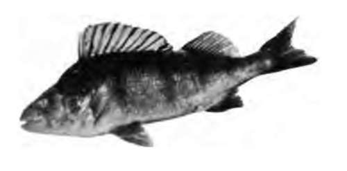
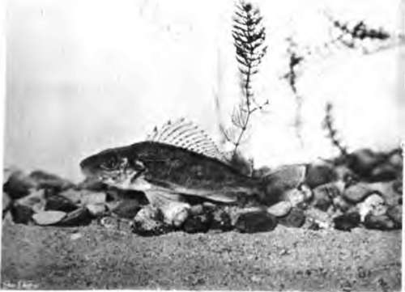
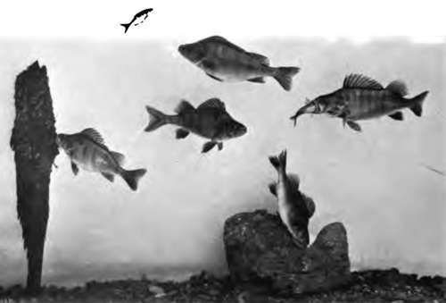
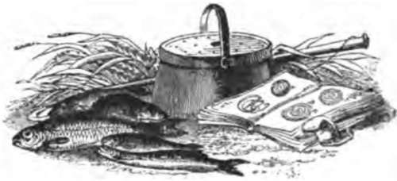
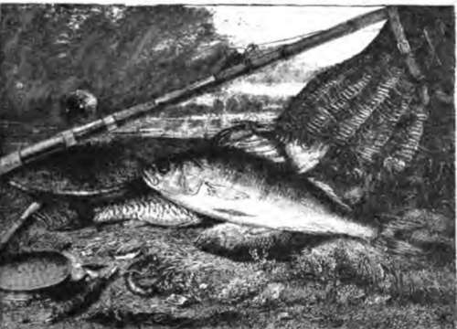

Chapter XII. The Perches (Percides)
Description
This section is from the book "Fishing", by Horace G. Hutchinson. Also available from Amazon: Fishing.
Chapter XII. The Perches (Percides)
These spiny-rayed or Acanthopterygian fishes, of which our common perch is the type, are distinguished among their relatives in having only one or two spines in the anal fin, the allied Cen-trarchid* and Scrranid* having three or more. The Pent da are essentially fresh-water fishes, only a few out of the 95 species of which the family is composed entering salt water (Lucioperca, Percarind). They are carnivorous, and their range of distribution is confined to Europe, Western Asia, Siberia, and North America. With the exception of the species of the genera Perca and Lucioperca they are small or very small fishes.
The common perch of Europe (Pcrca fluviatilis) is characterised by two dorsal fins, the anterior of which is composed of 14 to 16 spines, the posterior of 2 spines and 13 to 15 soft rays; the anal fin has 2 spines and 8 to 10 soft rays; the scales are small and rough (80 to 98 in a longitudinal series, 58 to 67 in the lateral line); the body is olive or dark green above, passing to golden yellow down the sides, usually with from 5 to 7 vertical dark bars, lost on the sides, the first below the origin of the dorsal fin; the belly is white; the spinous dorsal is greyish, with a deep black spot behind and sometimes another in front; the ventrals and the anal are orange or red. The largest specimen examined by me measures 18 inches.
The perch inhabits nearly the whole of Europe, with the exception of the Spanish Peninsula, and it extends into Asia as far east as Lake Baikal. It is absent from the Isle of Wight. It has been thoroughly acclimatised in New South Wales. It prefers clear, slightly running waters, with plenty of vegetation, round which it twines its band-shaped strings of eggs, often measuring 3 feet in length and 1 inch in width; the breeding season is in April and May. Males appear to be less numerous than females.
The place of our perch is taken in North America by a very closely allied species, P. flavcscens) which has the same general appearance and the same habits.
27.- Perch At Rest.
The family Percidae is represented in England by a second form, the ruff, or pope (Accrina cernua), distinguished by its single dorsal fin with 13 to 16 spines and 11 to 15 soft rays, and by its marbled or speckled colouration. Owing to its small size it is of little interest to the angler.
The finest members of the family are the pike-perch (Lucioperca), the several species of which occur in Continental Europe and Scandinavia, the Black and Caspian Seas. Western and Central Asia, and Canada and the Eastern United States. The best known is the sander (L. sandra), one of the most valued fishes of Germany and Russia, growing to over 3½ feet in length and a weight of 30 lbs. The natural habitat of this species does not extend westwards beyond the Elbe system, but it has been successfully introduced in the Rhine, whence it has spread to various parts of Holland and Belgium. As it has no objection to brackish water, young specimens have frequently been caught at the mouths of Dutch rivers within the last few years, and sent over along with smelts to the London market. As its name indicates, the pike-perch has something of the pike in its appearance; it differs from the perch in its larger mouth with more powerful dentition, the more elongate shape of the body, and the more elongate soft dorsal fin. in which there are 19 to 23 rays.
The body is green or olive above, silvery beneath, the back and sides with blackish blotches, which may form 8 to 10 more or less regular transverse bars; the dorsal fins are spotted or barred with blackish.
The American species, L. canadensis and L. vitrea, are among the very highly valued game-fishes, the latter being one of the most important fishes propagated by the United States Fish Commission. The principal propagating station is at Putin Bay, and the output in 1900 was 89,700,000 eggs, fry, and fingerings. The u Wall-eyed Pike " (L. vitrea), which reaches its greatest abundance in the Great Lakes, attains a length of 3 feet and a weight of 25 lbs.; whilst the sauger, or u Sand-Pike" (L. canadensis), is a much smaller fish, its length seldom exceeding a foot.
Related to the perches, although belonging to a different-family (Centrarchidae), are the black bass (Micropterus) of North America, which are now largely introduced into the waters of Germany, Belgium, Switzerland, and Italy. These are among the most important of American game-fishes.
The small-mouthed black bass (M. dolomiei) is a handsome fish, growing to a length of 18 inches and a weight of 5 lbs. It has much the shape of a perch; the dorsal fin is divided into two by a deep notch, the anterior portion having 9 or 10 spines and the posterior 13 to 15 soft rays; the anal fin has 3 spines and 11 or 12 soft rays; the scales are small and feebly denticulate, the number in the lateral line being 67 to 78. The ground colour is golden, bronzy, or green, with or without darker spots; two more or less distinct oblique dark streaks run along each side of the head, from below the eye and from the upper border of the maxillary to the prsopercular border. It inhabits the Great Lakes, and extends northwards to Canada, southwards to South Carolina, and it has now been introduced into many waters of the Western States.
Both for the quality of the flesh and the sport it affords to the fly fisher, this fish is held in America in almost as high esteem as the salmon and trout, and Dr. Henshall, the author of the " Book of the Black Bass," considers it as " the gamest fish that swims.
The second species, the large-mouthed black bass (M. salmonoides), is equally well known to anglers and epicures, and its range is even greater than that of its congener, extending southwards into Florida, Texas, and Northern Mexico. It prefers more sluggish waters, and frequently enters brackish water along the coast. In the north it attains a weight of 8 lbs. The mouth is larger than in Af. dolomici, extending to below the posterior border of the eye, or beyond; there are only 12 or 13 soft rays in the dorsal fin and 10 or n in the anal, and the scales are a little larger-58 to 67 in the lateral line.
The relative merits of the two species as game-fishes have been much discussed, but Dr. Henshall regards them as equal in this respect.
Readers interested in these fishes should not fail to refer to Dr. Henshall's work, quoted above, and to Drs. Jordan and Evermann's "American Game and Food Fishes," which contains beautiful photographs of living specimens.

Continue to:
- prev: Fishing For Pike: "Spinning," "Live-Baiting," And "Paternostering". Continued
- Table of Contents
- next: Chapter XIII. Perch: "Paternoster" And "Float-Fishing"